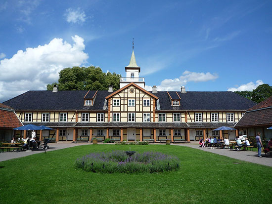
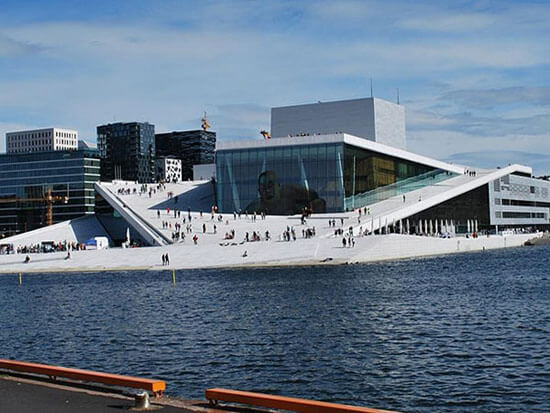
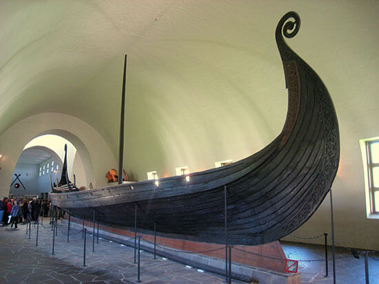

Attractions

The Oslo City Museum offers exhibits dedicated to the history of Oslo

The Oslo Opera House is the home of the Norwegian National opera and Ballet, as well as the National Opera Theater

The viking ship museum houses some of the world's best-preserved viking longships as well as burial artifacts

At the Norwegian Museum of Cultural History, become immersed in Norway's history and culture.